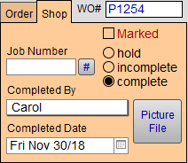
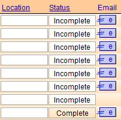

Track Work Orders by Completion Status
The Shop Tab shows the completion status of the frame job. Tracking your Work Order status with this is easy.
Three Types of Completion Status
FrameReady supports three built-in states of progress for each Work Order:
Incomplete
-
When a new Work Order is created, it is automatically assigned a progress status of Incomplete.
-
Incomplete indicates that the order has been entered on the computer but has not yet been assembled.
-
Incomplete orders are automatically included in Frame/Purchase Orders -- except if they have been manually excluded by clicking the Cancel Frame Order sidebar button.
Hold
-
Helpful if you know you have the sale but are not ready to order the supplies, e.g. customer wants spouse to see it, or wants to match the mat to furniture.
-
Switching from Hold to Incomplete does not update the Work Order's creation date.
-
Work Orders with a status of Hold are excluded from Frame Order and Purchase Orders.
Complete
-
Indicates that the order has been assembled.
-
No further work is required on the piece.
You must manually mark the order as completed.
Tip: At the same time that you return to your computer to mark the job as completed, it is recommended that you record the employee name in the Completed by field and enter the Completed Date. These fields are used in separate reports which help to track how long orders take to be completed and who is completing them.
It is also important to mark Work Orders as Complete if you are using the Frame Order or Purchase Order component as well as the incomplete list.
Progress States in Form View
-
Three radio buttons, located under the Shop tab, allow you to track and/or adjust the progress of the Work Order.
-
See also: Shop Management Section

Progress States in List View
-
When you switch to Work Orders List View, the same three states also appear in the Status column.
-
The Priority field is another which can be of help to production. Priority ratings can go hand-in-glove with the Status. Each Due Date has the option of Normal, Promised, Rush, Back Ordered which are generally used to indicate the time sensitivity of the Work Order.

How to Change the current Progress (in List View)
-
After selecting an entry in the Status field, e.g. Incomplete, from the pop-up field on the list view screen, the text appears in the field.
-
To change the entry shown in the field, click on the field and select a different entry from the pop-up list.
-
There is no need to delete the current item from the field before re-selecting a different entry in the list.
Last modified 5/11/2023.
© 2023 Adatasol, Inc.